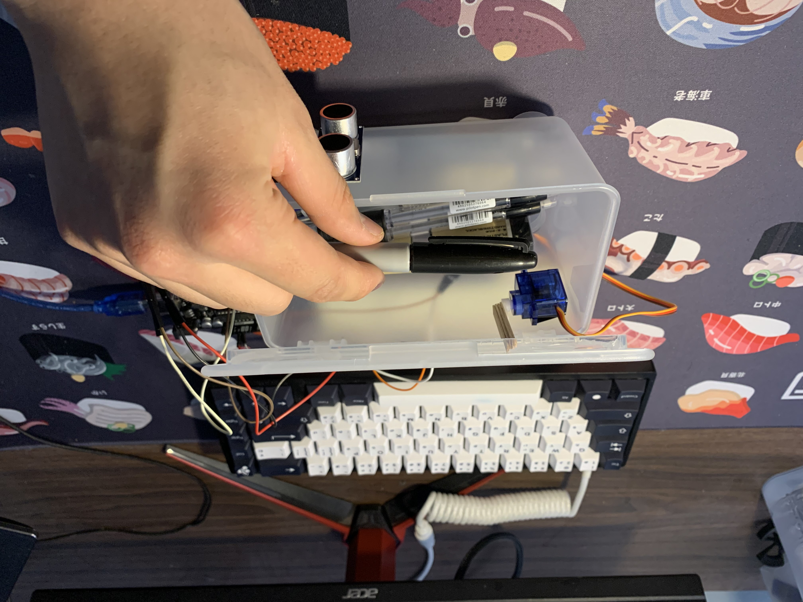

jan 2022
This was a project I took on to strengthen my understanding of Arduino electronics and programming. The three main components for this project are the Ultrasonic sensor, a micro servo, and the Arduino Uno.
When the ultrasonic sensor detects an object (in this case the person's hand or the stationery) that is less than 50 centimetres away, it will trigger the micr servo to rotate 160 degrees to open the lid of the pencil box. When the object cannot be detected by the Ultrasonic sensor, the servo will rotate back to its original position to close the lid.
The step by step process of the mechanism can be seen below: